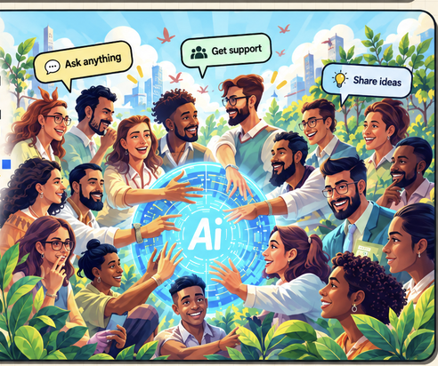

REAL QUESTIONS · DIFFERENT PERSPECTIVES · SHARED PROGRESS
A CIRCLE FOR THE AI ERA ● PEOPLE FIRST
AI is moving fast.
Humans need to move together.
A place for curious, excited and uncertain minds to meet, compare experiences, discover useful AI and help one another make sense of what's next.

Real people.Shared discoveries.Ask anythingShare what worksMeet people
Help shape the first 50 voices.
We’re at the beginning. No past conferences, invented experts or membership claims—just an invitation to explore AI together. Read the answers freely, then choose whether to hear about our first gathering.
What does AI mean for you?
Choose your profession to explore practical answers about jobs, skills, safety and opportunities. Learn first. Join only if you want to.
01 / START WITH A QUESTION
Excited, worried, curious—or full of ideas?
Jobs, ideas, tools, learning—or just trying to keep up. There's no single way to feel about it.
A CONVERSATION TO EXPLORE
Will AI change my job?
What might change, what stays human, and how are other people adapting?
Explore AI and work →Questions are where conversations begin.02 / NOT FIGURING IT OUT ALONE
Sometimes what helps most is another person.
Someone who's tried the tool. Someone asking the same question. Someone who can offer a different perspective.
See how the Circle works ↗Illustrative exchange — not an actual member testimonial.
03 / HOW SHARED LEARNING WORKS
One question can lead somewhere.
Not perfect answers. Better questions, useful attempts, and learning that travels.
ONE QUESTION. MANY PERSPECTIVES.
Different experiences can help us see a better next step.
The more we share, the more we grow.
Bring a question, a skill, an experience—or an idea. Everyone can learn. Everyone can help somebody else take a step forward.
04 / WORTH EXPLORING
Less noise. More useful discovery.
Different interests, one shared habit: being curious and checking what works.
AI & my job
How change feels in different professions.
Explore perspectives ↗02 / TOOLS & IDEASThings worth trying
Practical experiments, wins and limitations.
Explore discoveries ↗03 / THE REALITY CHECKWhat actually works?
Experiences become more useful when we check them.
Explore evidence ↗05 / A LOOK INSIDE THE IDEA
What could a real AI conversation look like?
One question. A useful experiment. A human check. A lesson someone else can try.
EXAMPLES CLEARLY LABELED AS FICTIONAL06 / THE CIRCLE IS PEOPLE
Many perspectives.
One shared future.
Students, professionals, parents, makers, beginners and experienced users all see different parts of the AI transition.
EXPERIENCES WE WANT TO HEAR
From classrooms to careers, every perspective matters.
Students exploring AI, teachers testing ideas for learning, and professionals navigating change all bring different questions.
See sample feedback formats ↗Humans guide AI.
AI empowers humans.
The future of AI should be shaped by people—not simply happen to them. Technology can help us create, learn and solve problems. People remain responsible for purpose, judgment and the choices that matter.
Why this matters ↗START HERE / PEOPLE FIRST
Find your people. Bring your perspective.
Join to ask and learn, contribute something useful, or apply to help organize a Circle. No one needs to have all the answers.
Join the Circle ↗Apply to lead a Circle ↗Collaborate with us ↗THE IDEA BEHIND THE CIRCLE
AI is the enabler. People grow together.
An open place to ask, listen, try and learn together.
Why this community exists ↗